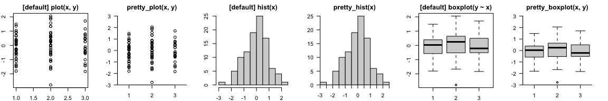

prettyGraphics is an R package designed to make the production of plots and data exploration easier, more flexible and prettier. prettyGraphics has been particularly inspired by the requirements of continuous ecological datasets. The package includes multiple ‘building block’ functions which help to define the initial arguments of a plot and then add elements to a plot in sequence. Some integrative functions draw on the flexibility of building blocks to define prettier plots for a variety of equivalent plotting functions in base R (e.g. graphics::plot(), graphics::hist() and more) or more specialised routines. Key functionality includes:
- The definition of pretty axes for plots.
- Tools to aid data exploration, including colouring lines by covariates and adding shading to elucidate relationships between several variables.
- Tools to aid statistical inference, including adding statistical summaries to reveal patterns and adding model predictions to plots to compare observations with model predictions.
- Integrative functions which create prettier versions of common plots more easily and facilitate visualisation of spatiotemporal data.
- The definition of pretty plot layouts.
Installation
You can install the development version of prettyGraphics from GitHub with:
devtools::install_github("edwardlavender/prettyGraphics", dependencies = TRUE, build_vignette = TRUE)If you build the vignette, you can view this with vignette("introducing_prettyGraphics", package = "prettyGraphics"). The package can then be loaded and attached with:
The definition of pretty axes
-
pretty_seq()defines defines pretty sequences, given data, limits and pretty parameters; -
pretty_axis()is a very flexible function which is used to define and add pretty axes to plots (i.e., axes with intelligible tick mark labels that are positioned in appropriate, adjoining positions, rather than as an approximate box around a plot); -
pi_notation()translates numeric vectors into π notation; -
sci_notation()translates the ‘e’ notation used by base R into scientific notation; -
add_lagging_point_zero()brings all numbers up to the same number of decimal places; -
add_grid_xy_rect()adds a rectangular grid to a plot at user-defined positions;
Data exploration
-
add_lines()adds a line to a plot illustrating a relationship between y and x that can be coloured by the values of a third variable; -
add_colour_bar()adds a customisable colour bar legend to a plot; -
add_shading_bar()adds blocks of shading to a plot to elucidate relationships between a response and explanatory variables, one of which is a factor; -
add_shading_quantiles()adds shading for the quantiles of observed variation to a plot; -
add_boundary_box()adds a boundary box around observations at specified coordinates;
Statistical inference
-
summarise_in_bins()computes statistical summaries of continuous data in bins, which can be added to plots usingadd_lines(); -
add_error_bars()adds error bars to a plot; -
list_CIs()lists model predictions/confidence intervals from fitted values and standard errors (or similar); -
add_error_envelope()adds model predictions (e.g. fitted lines, confidence intervals) to plots; -
pretty_smooth_1d()plots pretty one-dimensional smooths estimated bymgcv::gam(); -
pretty_smooth_2d()plots pretty two-dimensional smooths estimated bymgcv::gam();
Standard plotting functions
-
pretty_plot()creates prettier plots for a variety of functions; -
pretty_hist()creates prettier histograms; -
pretty_boxplot()creates prettier boxplots; -
pretty_curve()evaluates and plots functions; -
pretty_mat()creates pretty matrices; -
pretty_residuals()creates prettier diagnostic residual plots (including standard diagnostic plots alongside residuals against covariates, time stamps and the autocorrelation function, if applicable);
Here are some simple examples in which the default graphics and prettyGraphics plots are compared:
# Simulate some data
n <- 100
x <- factor(sample(1:3, n, replace = TRUE))
y <- stats::rnorm(n, 0, 1)
# Compare graphics and prettyGraphics defaults for some example plots
pp <- par(mfrow = c(1, 6), mar = c(2, 2, 2, 2))
plot.default(x, y, main = "[default] plot(x, y)")
pretty_plot(x, y, main = "pretty_plot(x, y)")
hist(y, main = "[default] hist(x)")
pretty_hist(y, main = "pretty_hist(x)")
boxplot(y ~ x, main = "[default] boxplot(y ~ x)")
pretty_boxplot(x, y, main = "pretty_boxplot(x, y)")
par(pp)Temporal data
-
pretty_line()creates pretty number lines and timelines; -
define_time_blocks()defines time blocks (i.e., diel periods or seasons) for each day in a time window (designed to work withadd_shading_bar()); -
pretty_ts()creates pretty time series plots; -
pretty_ts_mat()creates 2-dimensional plots of the within and between day variation in a time series; -
pretty_pgram()creates processed periodogram plots (power spectra); -
vis_ts()is an R Shiny-Dashboard user interface for the interactive exploration of (ecological) time series and creation of publication quality plots; -
add_moons()adds moons to a plot of lunar phase;
Spatial data
-
pretty_map()produces pretty maps andpretty_map_from_file_raster()is a wrapper that creates maps directly from a list of source files. These functions are supported by a series of helper functions for adding spatial layers to a plot:-
add_sp_raster()adds rasters to a background map; -
add_sp_poly()adds polygons to a background map; -
add_sp_line()adds lines to a background map; -
add_sp_path()adds paths to a background map; -
add_sp_points()adds locations to a background map; -
summarise_by_lat()andadd_profile_lat()calculate and add latitudinal profiles to a plot;
-
-
pretty_scape_3d()andvis_scape_3d()produce interactive, 3-dimensional visualisations of landscapes/seascapes and/or environmental conditions; for large rasters,crop_aggr_utm()helps reduce raster dimensions for these functions;
Colour schemes
-
pretty_cols_brewer()facilitates the creation of pretty colour schemes; -
pretty_cols_split_heat()generates a ‘split-heat’ colour scheme in which values either side of a break-point are coloured differently;
Future functionality
Possible future functionality includes:
- Additional standard routines, such as
pretty_barplot()for prettier barplots; - Additional routines for visualising spatial data;
- Introduction of
ggplot2support; - Additional specialised functions, such as
add_hydrodynamic_ts()to add hydrodynamic model predictions to (depth) time series;